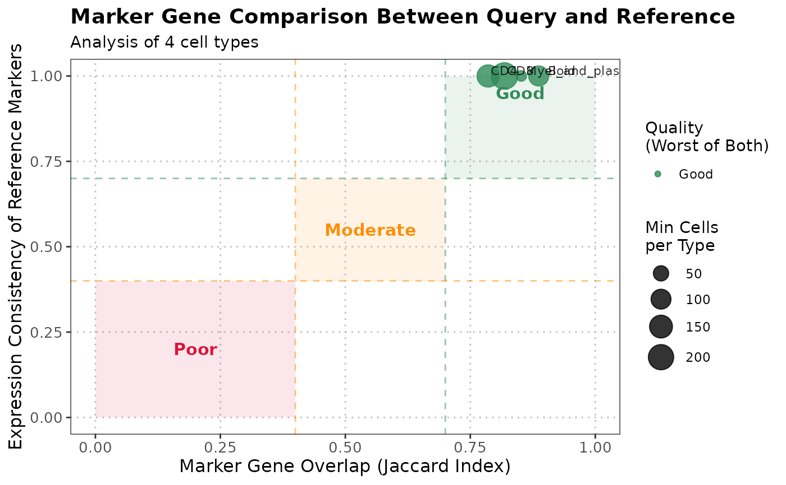

Compare Marker Gene Expression between Query and Reference Data
Source:R/compareMarkers.R, R/plot.compareMarkersObject.R
compareMarkers.RdThis function identifies marker genes for each cell type in both query and reference datasets using the standard Bioconductor approach (Wilcoxon rank-sum test), and compares their expression patterns to assess annotation quality. It can optionally filter query cells based on anomaly detection results and restrict analysis to specific cell types.
The S3 plot method generates a comprehensive visualization of the output from the `compareMarkers` function. The plot shows marker gene overlap and expression consistency between query and reference cell types, with quality assessment and detailed annotations.
Usage
compareMarkers(
query_data,
reference_data,
query_cell_type_col,
ref_cell_type_col,
cell_types = NULL,
n_markers = 50,
min_cells = 10,
anomaly_filter = c("none", "anomalous_only", "non_anomalous_only"),
assay_name = "logcounts",
max_cells_query = 5000,
max_cells_ref = 5000,
...
)
# S3 method for class 'compareMarkersObject'
plot(x, cell_types = NULL, ...)Arguments
- query_data
A
SingleCellExperimentobject containing query cells.- reference_data
A
SingleCellExperimentobject containing reference cells.- query_cell_type_col
The column name in the
colDataofquery_datathat identifies the cell types.- ref_cell_type_col
The column name in the
colDataofreference_datathat identifies the cell types.- cell_types
Character vector specifying which cell types to plot. If NULL, all cell types are plotted.
- n_markers
Number of top marker genes to consider for each cell type. Default is 50.
- min_cells
Minimum number of cells required per cell type for marker identification. Default is 10.
- anomaly_filter
Character string specifying how to filter query cells based on anomaly detection. Options: "none" (default), "anomalous_only", "non_anomalous_only".
- assay_name
Name of the assay to use for computations. Default is "logcounts".
- max_cells_query
Maximum number of query cells to retain after cell type filtering. If NULL, no downsampling of query cells is performed. Default is 5000.
- max_cells_ref
Maximum number of reference cells to retain after cell type filtering. If NULL, no downsampling of reference cells is performed. Default is 5000.
- ...
Additional arguments passed to the plotting function.
- x
A list containing the output from the
compareMarkersfunction.
Value
A list containing the following elements:
- marker_overlap
Matrix showing overlap of top markers between query and reference for each cell type.
- expression_consistency
Matrix showing expression consistency of reference markers in query data.
- quality_scores
Named vector of quality assessments for each cell type.
- markers_query
List of marker gene results for each cell type in query data.
- markers_ref
List of marker gene results for each cell type in reference data.
- common_cell_types
Vector of cell types present in both datasets.
- n_cells_query
Named vector of cell counts per type in query data.
- n_cells_ref
Named vector of cell counts per type in reference data.
- anomaly_filter_used
Character string indicating the anomaly filter applied.
- selected_cell_types
Character vector of cell types analyzed.
- anomaly_output
Output from anomaly detection if performed.
The S3 plot method returns a ggplot object representing the marker gene comparison results.
Details
The function performs the following steps:
1. Optionally performs anomaly detection and filters query cells based on results.
2. Identifies marker genes for each cell type in both datasets using findMarkers approach.
3. Reference markers are always computed using all reference cells for each cell type.
4. Query markers are computed using filtered cells (anomalous/non-anomalous) if specified.
5. Compares the overlap of top marker genes between corresponding cell types.
6. Evaluates the expression consistency of reference markers in query data.
7. Provides quality scores based on marker gene concordance.
Marker genes are identified using Wilcoxon rank-sum tests comparing each cell type against all others. High overlap and consistent expression of markers indicate good annotation quality.
The S3 plot method creates a scatter plot showing the relationship between marker overlap (x-axis) and expression consistency (y-axis) for each cell type. Points are colored by quality score and sized by the minimum number of cells. Quality zones provide visual guidance for interpretation.
See also
plot.compareMarkersObject, detectAnomaly
compareMarkers
Author
Anthony Christidis, anthony-alexander_christidis@hms.harvard.edu
Examples
# Load data
data("reference_data")
data("query_data")
# Compare marker genes
marker_comparison <- compareMarkers(query_data = query_data,
reference_data = reference_data,
query_cell_type_col = "expert_annotation",
ref_cell_type_col = "expert_annotation")
# With anomaly filtering
marker_comparison_filtered <- compareMarkers(query_data = query_data,
reference_data = reference_data,
query_cell_type_col = "expert_annotation",
ref_cell_type_col = "expert_annotation",
anomaly_filter = "non_anomalous_only")
#> Warning: 'fitTrendVar' is deprecated.
#> Use 'scrapper::fitVarianceTrend' instead.
#> See help("Deprecated")
#> Warning: 'combineBlocks' is deprecated.
#> See help("Deprecated")
#> Warning: 'scran::getTopHVGs' is deprecated.
#> Use 'scrapper::chooseHighlyVariableGenes' instead.
#> See help("Deprecated")
#> Warning: 'fitTrendVar' is deprecated.
#> Use 'scrapper::fitVarianceTrend' instead.
#> See help("Deprecated")
#> Warning: 'combineBlocks' is deprecated.
#> See help("Deprecated")
#> Warning: 'scran::getTopHVGs' is deprecated.
#> Use 'scrapper::chooseHighlyVariableGenes' instead.
#> See help("Deprecated")
# Visualize results
plot(marker_comparison)
